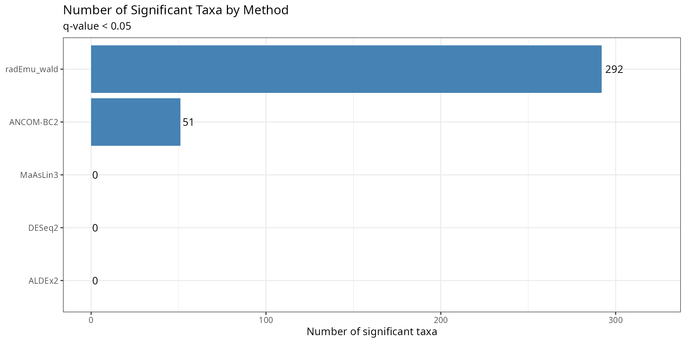
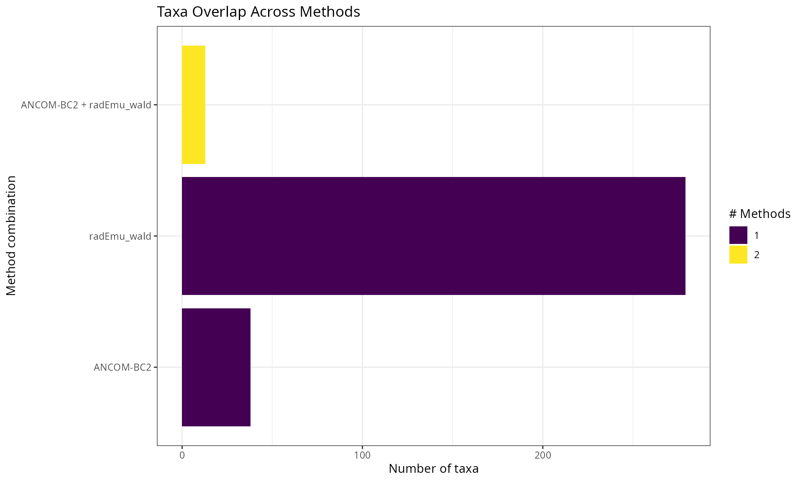
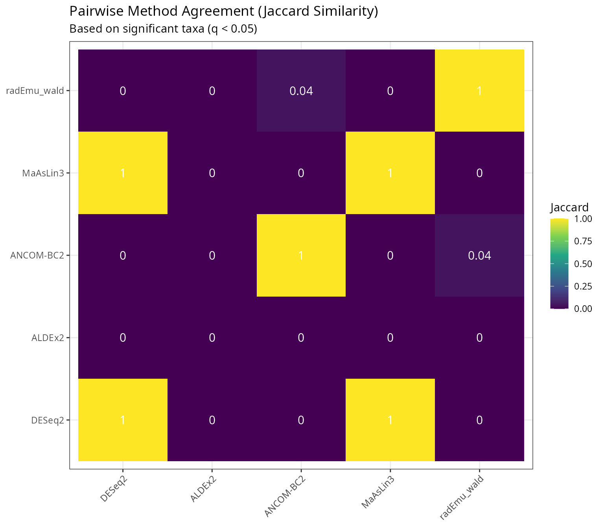
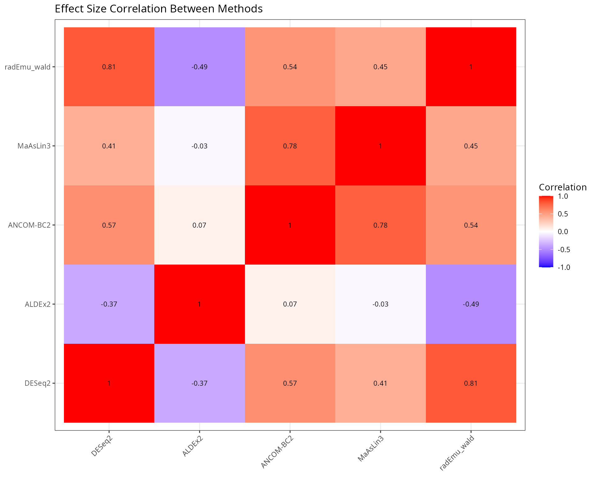
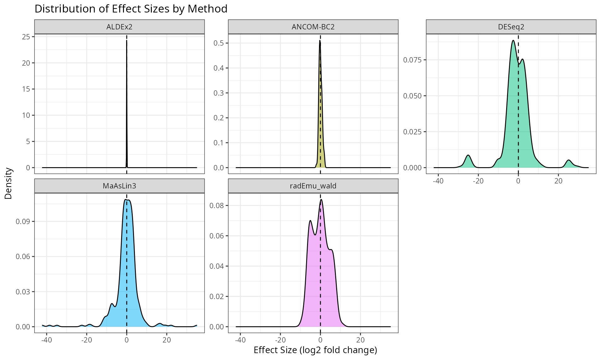
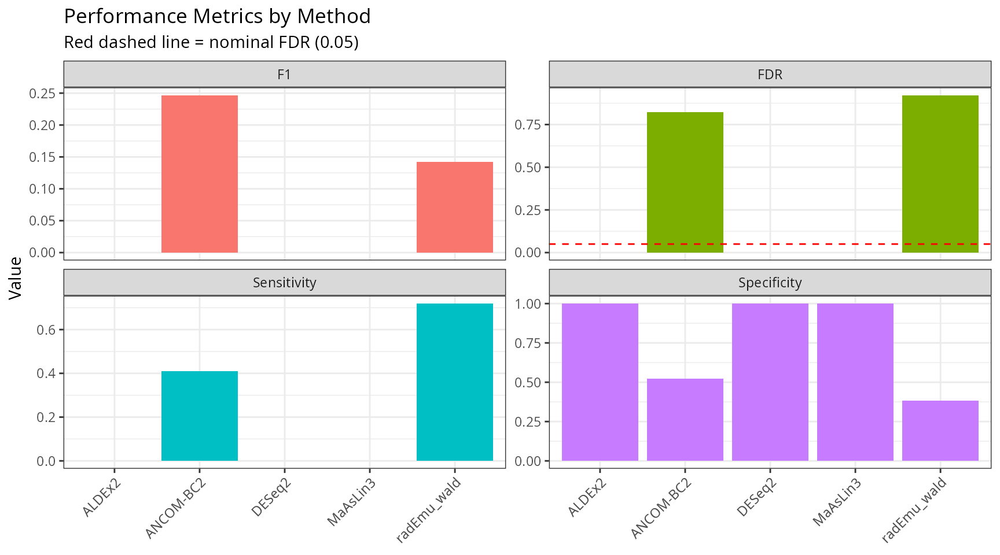
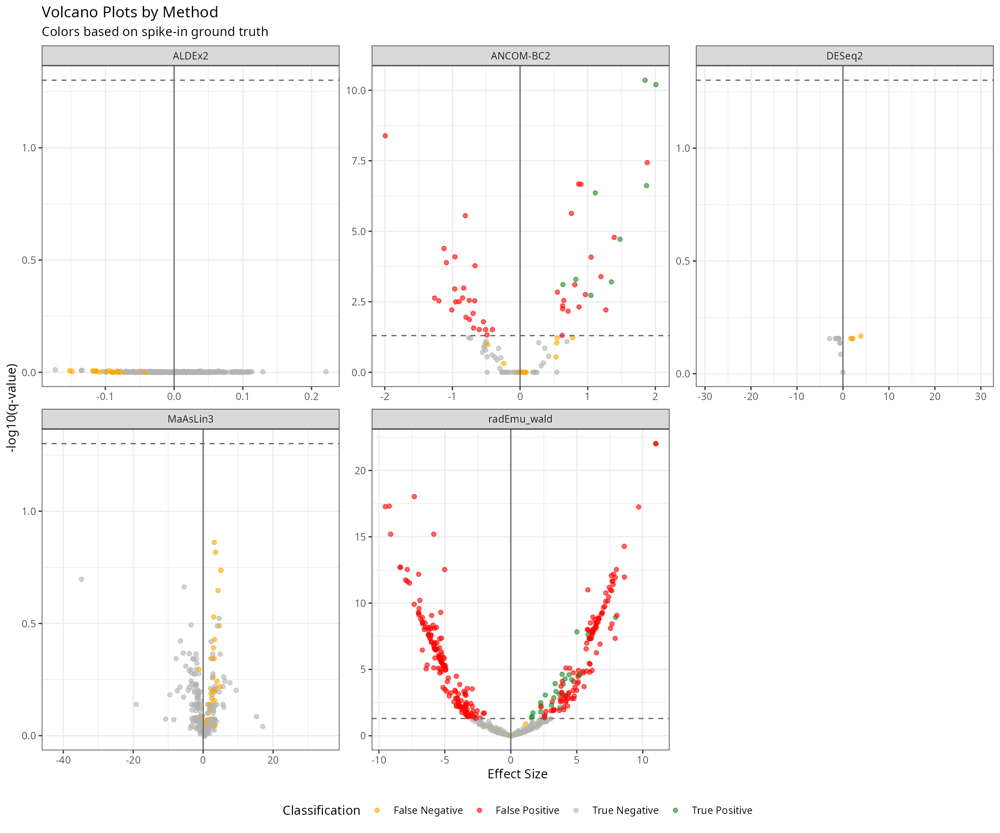
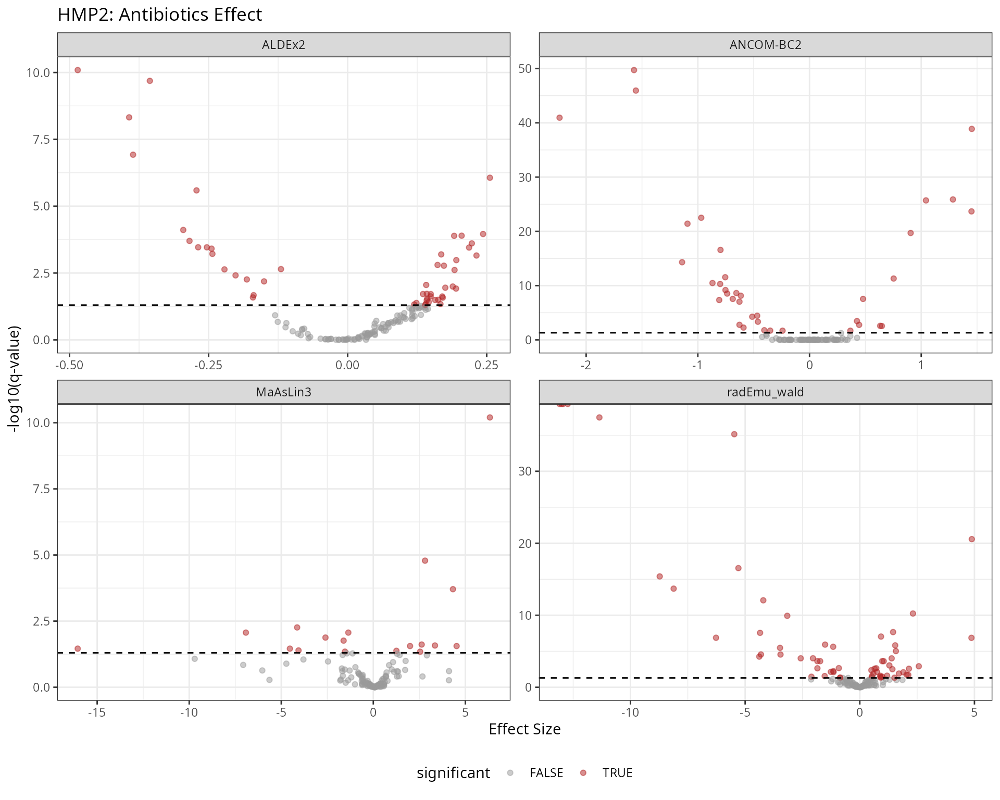

Benchmarking Differential Abundance Methods
Adrien Taudière
2026-03-13
Source:vignettes/benchmark-da-methods.Rmd
benchmark-da-methods.RmdIntroduction
This vignette provides a comprehensive benchmark of differential abundance (DA) methods for microbiome data, inspired by the benchdamic package approach. We compare seven methods:
| Method | Package | Approach |
|---|---|---|
| ALDEx2 | ALDEx2 | CLR transformation + Monte Carlo sampling from Dirichlet |
| ANCOM-BC2 | ANCOMBC | Linear regression with bias correction |
| MaAsLin3 | maaslin3 | Generalized linear models (abundance + prevalence) |
| DESeq2 | DESeq2 | Negative binomial GLM with size factor normalization |
| edgeR | edgeR | Negative binomial GLM with TMM normalization |
| limma-voom | limma | Linear models on voom-transformed counts |
| radEmu | radEmu | Robust estimation for relative abundance data |
The benchmark evaluates:
- Method concordance: Agreement between methods on significant taxa
- Effect size correlation: Consistency of effect size estimates
- Sensitivity/Specificity trade-off: Using simulated spike-in data
- Computational considerations: Runtime and ease of use
Helper Functions
We define wrapper functions to standardize output across methods.
#' Run DESeq2 on phyloseq object
#' @param physeq A phyloseq object
#' @param formula Formula for the design (e.g., "~ condition")
#' @param contrast Character vector for contrast (e.g., c("condition", "B", "A"))
#' @param nclusters Number of cores for parallel processing (default 1)
#' @return Data frame with taxon, effect (log2FC), pvalue, qvalue
run_deseq2 <- function(physeq, formula, contrast, nclusters = 1) {
# Convert to DESeq2
dds <- phyloseq_to_deseq2(physeq, as.formula(formula))
# Set up parallel processing
if (nclusters > 1) {
BPPARAM <- BiocParallel::MulticoreParam(workers = nclusters)
} else {
BPPARAM <- BiocParallel::SerialParam()
}
# Run DESeq2 with geometric mean estimation that handles zeros
dds <- DESeq2::estimateSizeFactors(dds, type = "poscounts")
dds <- DESeq2::estimateDispersions(dds, fitType = "local")
dds <- DESeq2::nbinomWaldTest(dds)
# Get results
res <- DESeq2::results(dds, contrast = contrast, parallel = nclusters > 1, BPPARAM = BPPARAM)
data.frame(
taxon = rownames(res),
effect = res$log2FoldChange,
pvalue = res$pvalue,
qvalue = res$padj,
method = "DESeq2",
stringsAsFactors = FALSE
) |>
filter(!is.na(effect))
}
#' Run edgeR on phyloseq object
#' @param physeq A phyloseq object
#' @param group_var Name of grouping variable in sample_data
#' @param contrast_levels Two-element vector: c(treatment, reference)
#' @return Data frame with taxon, effect (logFC), pvalue, qvalue
run_edgeR <- function(physeq, group_var, contrast_levels) {
# Extract data
counts <- as(otu_table(physeq), "matrix")
if (!taxa_are_rows(physeq)) counts <- t(counts)
group <- factor(sample_data(physeq)[[group_var]])
group <- relevel(group, ref = contrast_levels[2])
# Create DGEList
dge <- edgeR::DGEList(counts = counts, group = group)
# Filter low counts
keep <- edgeR::filterByExpr(dge)
dge <- dge[keep, , keep.lib.sizes = FALSE]
# Normalize
dge <- edgeR::calcNormFactors(dge, method = "TMM")
# Design matrix
design <- model.matrix(~ group)
# Estimate dispersion
dge <- edgeR::estimateDisp(dge, design)
# Fit model
fit <- edgeR::glmQLFit(dge, design)
qlf <- edgeR::glmQLFTest(fit, coef = 2)
# Get results
res <- edgeR::topTags(qlf, n = Inf)$table
data.frame(
taxon = rownames(res),
effect = res$logFC,
pvalue = res$PValue,
qvalue = res$FDR,
method = "edgeR",
stringsAsFactors = FALSE
)
}
#' Run limma-voom on phyloseq object
#' @param physeq A phyloseq object
#' @param group_var Name of grouping variable in sample_data
#' @param contrast_levels Two-element vector: c(treatment, reference)
#' @return Data frame with taxon, effect (logFC), pvalue, qvalue
run_limma_voom <- function(physeq, group_var, contrast_levels) {
# Extract data
counts <- as(otu_table(physeq), "matrix")
if (!taxa_are_rows(physeq)) counts <- t(counts)
group <- factor(sample_data(physeq)[[group_var]])
group <- relevel(group, ref = contrast_levels[2])
# Create DGEList for normalization
dge <- edgeR::DGEList(counts = counts, group = group)
# Filter low counts
keep <- edgeR::filterByExpr(dge)
dge <- dge[keep, , keep.lib.sizes = FALSE]
# Normalize
dge <- edgeR::calcNormFactors(dge, method = "TMM")
# Design matrix
design <- model.matrix(~ group)
# Voom transformation
v <- limma::voom(dge, design, plot = FALSE)
# Fit linear model
fit <- limma::lmFit(v, design)
fit <- limma::eBayes(fit)
# Get results
res <- limma::topTable(fit, coef = 2, number = Inf, sort.by = "none")
data.frame(
taxon = rownames(res),
effect = res$logFC,
pvalue = res$P.Value,
qvalue = res$adj.P.Val,
method = "limma-voom",
stringsAsFactors = FALSE
)
}
#' Run ALDEx2 on phyloseq object
#' @param physeq A phyloseq object
#' @param group_var Name of grouping variable in sample_data
#' @param contrast_levels Two-element vector: c(treatment, reference)
#' @param nclusters Number of cores for parallel processing (default 1)
#' @return Data frame with taxon, effect, pvalue, qvalue
run_aldex2 <- function(physeq, group_var, contrast_levels, nclusters = 1) {
# Convert factor to character to avoid ALDEx2 error
sample_data(physeq)[[group_var]] <- as.character(sample_data(physeq)[[group_var]])
# Extract counts and conditions for direct ALDEx2 call
counts <- as(otu_table(physeq), "matrix")
if (!taxa_are_rows(physeq)) counts <- t(counts)
conds <- sample_data(physeq)[[group_var]]
# Run ALDEx2 with parallel support
clr <- ALDEx2::aldex.clr(
counts,
conds,
mc.samples = 128,
useMC = nclusters > 1
)
tt <- ALDEx2::aldex.ttest(clr)
effect <- ALDEx2::aldex.effect(clr, useMC = nclusters > 1)
res <- cbind(tt, effect)
data.frame(
taxon = rownames(res),
effect = res$effect,
pvalue = res$wi.ep,
qvalue = res$wi.eBH,
method = "ALDEx2",
stringsAsFactors = FALSE
)
}
#' Run ANCOM-BC2 on phyloseq object
#' @param physeq A phyloseq object
#' @param group_var Name of grouping variable in sample_data
#' @param contrast_levels Two-element vector: c(treatment, reference)
#' @param nclusters Number of cores for parallel processing (default 1)
#' @return Data frame with taxon, effect (lfc), pvalue, qvalue
run_ancombc <- function(physeq, group_var, contrast_levels, nclusters = 1) {
res <- MiscMetabar::ancombc_pq(
physeq,
fact = group_var,
levels_fact = contrast_levels,
tax_level = NULL,
n_cl = nclusters
)
# Find the correct column names (depends on factor levels)
lfc_col <- grep("^lfc_", colnames(res$res), value = TRUE)[1]
p_col <- grep("^p_", colnames(res$res), value = TRUE)[1]
q_col <- grep("^q_", colnames(res$res), value = TRUE)[1]
data.frame(
taxon = res$res$taxon,
effect = res$res[[lfc_col]],
pvalue = res$res[[p_col]],
qvalue = res$res[[q_col]],
method = "ANCOM-BC2",
stringsAsFactors = FALSE
) |>
filter(!is.na(effect))
}
#' Run MaAsLin3 on phyloseq object
#' @param physeq A phyloseq object
#' @param group_var Name of grouping variable in sample_data
#' @param contrast_levels Two-element vector: c(treatment, reference)
#' @param nclusters Number of cores for parallel processing (default 1)
#' @return Data frame with taxon, effect (coef), pvalue, qvalue
run_maaslin3 <- function(physeq, group_var, contrast_levels, nclusters = 1) {
res <- maaslin3_pq(
physeq,
formula = paste0("~ ", group_var),
reference = setNames(list(contrast_levels[2]), group_var),
output = tempfile(),
correction_for_sample_size = TRUE,
plot_summary_plot = FALSE,
plot_associations = FALSE,
cores = nclusters
)
df <- res$fit_data_abundance$results |>
filter(grepl(group_var, metadata))
data.frame(
taxon = df$feature,
effect = df$coef,
pvalue = df$pval_individual,
qvalue = df$qval_individual,
method = "MaAsLin3",
stringsAsFactors = FALSE
) |>
filter(!is.na(effect))
}
#' Run radEmu on phyloseq object
#' @param physeq A phyloseq object
#' @param group_var Name of grouping variable in sample_data
#' @param contrast_levels Two-element vector: c(treatment, reference)
#' @param return_wald_p If TRUE (default), use fast Wald p-values. If FALSE,
#' use slower but more robust score tests with two-step filtering.
#' @param effect_threshold Minimum absolute effect to test with score tests
#' (only used when return_wald_p = FALSE, default 0.5)
#' @param max_taxa_to_test Maximum number of taxa to test with score tests
#' (only used when return_wald_p = FALSE, default NULL = all)
#' @param nclusters Number of cores for parallel processing (default 1)
#' @param ... Additional arguments passed to `radEmu::emuFit()`
#' @return Data frame with taxon, effect (estimate), pvalue, qvalue
run_emuFit <- function(physeq,
group_var,
contrast_levels,
return_wald_p = TRUE,
effect_threshold = 0.5,
max_taxa_to_test = NULL,
nclusters = 1, ...) {
# Remove samples with zero total counts (radEmu requirement)
sample_totals <- sample_sums(physeq)
physeq <- prune_samples(sample_totals > 0, physeq)
# Relevel factor so reference is first
sample_data(physeq)[[group_var]] <- factor(
sample_data(physeq)[[group_var]],
levels = c(contrast_levels[2], contrast_levels[1])
)
if (return_wald_p) {
# Fast approach: single fit with Wald p-values
fit <- radEmu::emuFit(
formula = as.formula(paste0("~ ", group_var)),
Y = physeq,
run_score_tests = FALSE,
return_wald_p=return_wald_p,
...
)
# Extract results (Wald p-values are in pval column)
coef_df <- fit$coef |>
filter(covariate != "(Intercept)")
# Adjust p-values for multiple testing
coef_df$wald_q <- p.adjust(coef_df$wald_p, method = "BH")
return(data.frame(
taxon = coef_df$category,
effect = coef_df$estimate,
pvalue = coef_df$wald_p,
qvalue = coef_df$wald_q,
method = "radEmu_wald",
stringsAsFactors = FALSE
) |>
filter(!is.na(effect)))
}
# Two-step approach with score tests (slower but more robust)
# Step 1: Run emuFit WITHOUT testing (fast) to get effect estimates
fit_effects <- radEmu::emuFit(
formula = as.formula(paste0("~ ", group_var)),
Y = physeq,
run_score_tests = FALSE,
...
)
# Extract effect estimates
coef_df <- fit_effects$coef
coef_df$abs_effect <- abs(coef_df$estimate)
# Step 2: Select taxa with high effects to test
# Filter by threshold and optionally limit to max_taxa_to_test
taxa_to_test <- coef_df |>
filter(covariate != "(Intercept)", abs_effect >= effect_threshold) |>
arrange(desc(abs_effect))
if (!is.null(max_taxa_to_test) && max_taxa_to_test > 0) {
taxa_to_test <- head(taxa_to_test, max_taxa_to_test)
}
if (nrow(taxa_to_test) == 0) {
# No taxa meet threshold - return all with NA p-values
return(data.frame(
taxon = coef_df$category[coef_df$covariate != "(Intercept)"],
effect = coef_df$estimate[coef_df$covariate != "(Intercept)"],
pvalue = NA_real_,
qvalue = NA_real_,
method = "radEmu",
stringsAsFactors = FALSE
))
}
# Get indices of taxa to test (j values)
taxa_names_vec <- taxa_names(physeq)
j_to_test <- match(taxa_to_test$category, taxa_names_vec)
# Step 3: Run emuFit WITH score testing only for selected taxa
fit_tested <- radEmu::emuFit(
formula = as.formula(paste0("~ ", group_var)),
Y = physeq,
test_kj = data.frame(k = 2, j = j_to_test),
parallel = nclusters > 1,
ncores = nclusters
)
# Extract tested results
tested_res <- fit_tested$coef |>
filter(covariate != "(Intercept)")
# Merge with all effects
all_effects <- coef_df |>
filter(covariate != "(Intercept)") |>
dplyr::select(category, estimate)
res <- all_effects |>
left_join(
tested_res |> dplyr::select(category, pval),
by = "category"
)
# Adjust p-values for multiple testing (only for tested taxa)
res$qvalue <- p.adjust(res$pval, method = "BH")
data.frame(
taxon = res$category,
effect = res$estimate,
pvalue = res$pval,
qvalue = res$qvalue,
method = "radEmu_score",
stringsAsFactors = FALSE
) |>
filter(!is.na(effect))
}
#' Run all DA methods on a phyloseq object
#' @param physeq A phyloseq object
#' @param group_var Name of grouping variable
#' @param contrast_levels Two-element vector: c(treatment, reference)
#' @param methods Character vector of methods to run
#' @param effect_threshold Minimum effect for radEmu testing (default 2)
#' @param nclusters Number of cores for parallel processing (default 2)
#' @param verbose If TRUE, print method name and elapsed time (default FALSE)
#' @param max_taxa_to_test Maximum number of taxa to test for radEmu (default NULL)
#' see `run_emuFit()`
#' @return Combined data frame of results
run_all_methods <- function(physeq, group_var, contrast_levels,
methods = c("DESeq2", "edgeR", "limma-voom",
"ALDEx2", "ANCOM-BC2", "MaAsLin3", "radEmu"),
effect_threshold = 2,
nclusters = 2,
verbose = TRUE,
max_taxa_to_test=0,
return_wald_p = TRUE) {
results <- list()
timings <- list()
for (method in methods) {
if (verbose) {
cli::cli_alert(cli::col_red("Running", method, "..."))
}
start_time <- Sys.time()
res <- tryCatch({
switch(method,
"DESeq2" = run_deseq2(physeq,
paste0("~ ", group_var),
c(group_var, contrast_levels[1], contrast_levels[2]),
nclusters = nclusters),
"edgeR" = run_edgeR(physeq, group_var, contrast_levels),
"limma-voom" = run_limma_voom(physeq, group_var, contrast_levels),
"ALDEx2" = run_aldex2(physeq, group_var, contrast_levels,
nclusters = nclusters),
"ANCOM-BC2" = run_ancombc(physeq, group_var, contrast_levels,
nclusters = nclusters),
"MaAsLin3" = run_maaslin3(physeq, group_var, contrast_levels,
nclusters = nclusters),
"radEmu" = run_emuFit(physeq, group_var, contrast_levels,
return_wald_p = return_wald_p,
effect_threshold = effect_threshold,
nclusters = nclusters,
max_taxa_to_test=max_taxa_to_test )
)
}, error = function(e) {
warning("Error in ", method, ": ", e$message)
NULL
})
elapsed <- as.numeric(difftime(Sys.time(), start_time, units = "secs"))
timings[[method]] <- elapsed
if (verbose) {
cli::cli_alert(cli::col_red(" done (", round(elapsed, 1), "s)\n", sep = ""))
}
if (!is.null(res)) {
results[[method]] <- res
}
}
if (verbose) {
cat("\nTotal time:", round(sum(unlist(timings)), 1), "s\n")
}
bind_rows(results)
}Dataset: Simulated Spike-in Data
To properly evaluate FDR control and sensitivity, we create datasets with known differentially abundant taxa. There are three approaches available in comparpq, each with different characteristics:
| Approach | Function | Key Feature |
|---|---|---|
| Multiply with compensation | multiply_counts_pq() |
Multiplies counts then scales down non-selected taxa to preserve library size |
| Permutation-based | permute_da_pq() |
Strictly preserves library sizes by redistributing counts |
| MIDASim simulation | midasim_pq() |
Generates realistic simulated data preserving taxon correlations |
Approach A: multiply_counts_pq with compensation
The multiply_counts_pq() function with
compensate = TRUE creates a compositional shift that DA
methods can detect. Without compensation, the multiplied samples would
have larger library sizes, and DA methods would normalize this away,
washing out the signal.
data("data_fungi", package = "MiscMetabar")
# Subset to binary comparison
data_fungi_hl <- subset_samples(data_fungi, Height %in% c("Low", "High"))
data_fungi_hl <- prune_taxa(taxa_sums(data_fungi_hl) > 10, data_fungi_hl)
# Create spike-in with compensation to preserve library size
data_spike_mult <- multiply_counts_pq(
data_fungi_hl,
fact = "Height",
conditions = "High",
multipliers = 4,
prop_taxa = 0.2,
seed = 42,
compensate = TRUE,
min_prevalence = 0.1,
verbose = TRUE
)
# Retrieve the actual modified taxa from the function output
spike_taxa_mult <- attr(data_spike_mult, "taxa_modified")
cat("Approach A - multiply_counts_pq with compensation:\n")
#> Approach A - multiply_counts_pq with compensation:
cat("- Total taxa:", ntaxa(data_spike_mult), "\n")
#> - Total taxa: 953
cat("- Spiked taxa:", length(spike_taxa_mult), "\n")
#> - Spiked taxa: 35
cat("- Samples:", nsamples(data_spike_mult), "\n")
#> - Samples: 86
cat("- Library size preserved:",
all.equal(sample_sums(data_fungi_hl), sample_sums(data_spike_mult)), "\n")
#> - Library size preserved: Mean relative difference: 0.000395983Approach B: permute_da_pq (strict library size
preservation)
The permute_da_pq() function guarantees exact library
size preservation (except for rounding) by redistributing counts within
each sample.
data_spike_perm <- permute_da_pq(
data_fungi_hl,
fact = "Height",
conditions = "High",
effect_size = 4,
prop_taxa = 0.1,
seed = 42,
min_prevalence = 0.1
)
spike_taxa_perm <- attr(data_spike_perm, "da_taxa")
cat("\nApproach B - permute_da_pq:\n")
#>
#> Approach B - permute_da_pq:
cat("- Spiked taxa:", length(spike_taxa_perm), "\n")
#> - Spiked taxa: 18
cat("- Library size preserved:",
all.equal(sample_sums(data_fungi_hl), sample_sums(data_spike_perm)), "\n")
#> - Library size preserved: Mean relative difference: 0.0003427415Approach C: midasim_pq (realistic simulation)
data_spike_mida <- midasim_pq(
data_fungi_hl,
fact = "Height",
condition = "High",
effect_size = log(4),
n_da_taxa = round(ntaxa(data_fungi_hl) * 0.1),
seed = 42,
min_prevalence = 0.1
)
spike_taxa_mida <- attr(data_spike_mida, "da_taxa_names")
cat("\nApproach C - midasim_pq:\n")
#>
#> Approach C - midasim_pq:
cat("- Spiked taxa:", length(spike_taxa_mida), "\n")
#> - Spiked taxa: 95Use Approach A for benchmark
For the main benchmark, we use the multiply_counts_pq
approach with compensation, as it modifies actual data while preserving
library sizes.
# Use the compensated multiply approach
data_spike <- clean_pq(data_spike_mult)
spike_taxa <- spike_taxa_mult
cat("\nDataset used for benchmark:\n")
#>
#> Dataset used for benchmark:
cat("- Total taxa:", ntaxa(data_spike), "\n")
#> - Total taxa: 939
cat("- Spiked taxa:", length(spike_taxa), "\n")
#> - Spiked taxa: 35
cat("- Samples:", nsamples(data_spike), "\n")
#> - Samples: 86
cat("- Groups:", table(sample_data(data_spike)$Height), "\n")
#> - Groups: 41 45Run All Methods
results_spike <- run_all_methods(
subset_taxa_pq(data_spike, taxa_sums(data_spike) > 100),
group_var = "Height",
contrast_levels = c("High", "Low"),
verbose=TRUE,
ncluster=4
)
# Summary of results
results_spike |>
group_by(method) |>
summarise(
n_taxa = n(),
n_significant = sum(qvalue < 0.05, na.rm = TRUE),
prop_significant = mean(qvalue < 0.05, na.rm = TRUE)
) |>
knitr::kable(caption = "Summary of DA results by method", digits = 3)| method | n_taxa | n_significant | prop_significant |
|---|---|---|---|
| ALDEx2 | 468 | 0 | 0.000 |
| ANCOM-BC2 | 110 | 51 | 0.464 |
| DESeq2 | 468 | 0 | 0.000 |
| MaAsLin3 | 333 | 0 | 0.000 |
| radEmu_wald | 468 | 292 | 0.624 |
Concordance Analysis
Number of Significant Taxa
sig_summary <- results_spike |>
mutate(significant = qvalue < 0.05) |>
group_by(method) |>
summarise(
n_significant = sum(significant, na.rm = TRUE),
n_tested = n()
)
ggplot(sig_summary, aes(x = reorder(method, n_significant), y = n_significant)) +
geom_col(fill = "steelblue") +
geom_text(aes(label = n_significant), hjust = -0.2) +
coord_flip() +
labs(
title = "Number of Significant Taxa by Method",
subtitle = "q-value < 0.05",
x = NULL,
y = "Number of significant taxa"
) +
theme_bw() +
expand_limits(y = max(sig_summary$n_significant) * 1.1)
Overlap Between Methods (UpSet Plot)
# Create presence/absence matrix for significant taxa
sig_taxa_list <- results_spike |>
filter(qvalue < 0.05) |>
group_by(method) |>
summarise(taxa = list(taxon)) |>
tibble::deframe()
# Convert to binary matrix
all_taxa <- unique(unlist(sig_taxa_list))
sig_matrix <- sapply(sig_taxa_list, function(x) all_taxa %in% x)
rownames(sig_matrix) <- all_taxa
if (nrow(sig_matrix) > 0) {
# UpSet-style visualization
overlap_df <- as.data.frame(sig_matrix) |>
rownames_to_column("taxon") |>
pivot_longer(-taxon, names_to = "method", values_to = "significant") |>
filter(significant) |>
group_by(taxon) |>
summarise(
n_methods = n(),
methods = paste(sort(method), collapse = " + ")
)
ggplot(overlap_df, aes(x = reorder(methods, n_methods), fill = factor(n_methods))) +
geom_bar() +
coord_flip() +
scale_fill_viridis_d(name = "# Methods") +
labs(
title = "Taxa Overlap Across Methods",
x = "Method combination",
y = "Number of taxa"
) +
theme_bw() +
theme(legend.position = "right")
}
Pairwise Method Agreement
# Calculate Jaccard similarity between methods
methods <- unique(results_spike$method)
jaccard_matrix <- matrix(NA, length(methods), length(methods),
dimnames = list(methods, methods))
for (i in seq_along(methods)) {
for (j in seq_along(methods)) {
taxa_i <- results_spike$taxon[results_spike$method == methods[i] &
results_spike$qvalue < 0.05]
taxa_j <- results_spike$taxon[results_spike$method == methods[j] &
results_spike$qvalue < 0.05]
intersection <- length(intersect(taxa_i, taxa_j))
union <- length(union(taxa_i, taxa_j))
jaccard_matrix[i, j] <- if (union > 0) intersection / union else 0
}
}
# Plot heatmap
jaccard_df <- as.data.frame(as.table(jaccard_matrix))
names(jaccard_df) <- c("Method1", "Method2", "Jaccard")
ggplot(jaccard_df, aes(x = Method1, y = Method2, fill = Jaccard)) +
geom_tile() +
geom_text(aes(label = round(Jaccard, 2)), color = "white", size = 4) +
scale_fill_viridis_c(limits = c(0, 1)) +
labs(
title = "Pairwise Method Agreement (Jaccard Similarity)",
subtitle = "Based on significant taxa (q < 0.05)",
x = NULL, y = NULL
) +
theme_bw() +
theme(axis.text.x = element_text(angle = 45, hjust = 1))
Effect Size Comparison
Effect Size Correlation
# Wide format for effect sizes
effects_wide <- results_spike |>
dplyr::select(taxon, method, effect) |>
pivot_wider(names_from = method, values_from = effect)
# Pairwise scatter plots
if (ncol(effects_wide) > 2) {
# Calculate correlations
cor_matrix <- cor(effects_wide[, -1], use = "pairwise.complete.obs")
# Plot correlation matrix
cor_df <- as.data.frame(as.table(cor_matrix))
names(cor_df) <- c("Method1", "Method2", "Correlation")
p_cor <- ggplot(cor_df, aes(x = Method1, y = Method2, fill = Correlation)) +
geom_tile() +
geom_text(aes(label = round(Correlation, 2)), color = "black", size = 3) +
scale_fill_gradient2(low = "blue", mid = "white", high = "red",
midpoint = 0, limits = c(-1, 1)) +
labs(
title = "Effect Size Correlation Between Methods",
x = NULL, y = NULL
) +
theme_bw() +
theme(axis.text.x = element_text(angle = 45, hjust = 1))
print(p_cor)
}
Effect Size Distribution
ggplot(results_spike, aes(x = effect, fill = method)) +
geom_density(alpha = 0.5) +
facet_wrap(~method, scales = "free_y") +
geom_vline(xintercept = 0, linetype = "dashed") +
labs(
title = "Distribution of Effect Sizes by Method",
x = "Effect Size (log2 fold change)",
y = "Density"
) +
theme_bw() +
theme(legend.position = "none")
FDR Control Assessment
Using our spike-in data, we can evaluate how well each method controls FDR.
# Get the actual spiked taxa (those with multiplied counts)
# We need to identify them from the multiply_counts_pq function
# For this, we'll use the taxa that were selected (stored during creation)
# Mark true positives
results_spike <- results_spike |>
mutate(
true_da = taxon %in% spike_taxa,
called_da = qvalue < 0.05
)
# Calculate performance metrics
performance <- results_spike |>
group_by(method) |>
summarise(
TP = sum(true_da & called_da, na.rm = TRUE),
FP = sum(!true_da & called_da, na.rm = TRUE),
TN = sum(!true_da & !called_da, na.rm = TRUE),
FN = sum(true_da & !called_da, na.rm = TRUE),
.groups = "drop"
) |>
mutate(
Sensitivity = TP / (TP + FN),
Specificity = TN / (TN + FP),
FDR = FP / (TP + FP),
Precision = TP / (TP + FP),
F1 = 2 * (Precision * Sensitivity) / (Precision + Sensitivity)
)
knitr::kable(
performance |>
dplyr::select(method, TP, FP, FN, Sensitivity, FDR, F1),
caption = "Performance metrics based on spike-in ground truth",
digits = 3
)| method | TP | FP | FN | Sensitivity | FDR | F1 |
|---|---|---|---|---|---|---|
| ALDEx2 | 0 | 0 | 32 | 0.000 | NaN | NaN |
| ANCOM-BC2 | 9 | 42 | 13 | 0.409 | 0.824 | 0.247 |
| DESeq2 | 0 | 0 | 3 | 0.000 | NaN | NaN |
| MaAsLin3 | 0 | 0 | 32 | 0.000 | NaN | NaN |
| radEmu_wald | 23 | 269 | 9 | 0.719 | 0.921 | 0.142 |
performance_long <- performance |>
dplyr::select(method, Sensitivity, Specificity, FDR, F1) |>
pivot_longer(-method, names_to = "Metric", values_to = "Value")
ggplot(performance_long, aes(x = method, y = Value, fill = Metric)) +
geom_col(position = "dodge") +
geom_hline(data = data.frame(Metric = "FDR", y = 0.05),
aes(yintercept = y), linetype = "dashed", color = "red") +
facet_wrap(~Metric, scales = "free_y") +
labs(
title = "Performance Metrics by Method",
subtitle = "Red dashed line = nominal FDR (0.05)",
x = NULL, y = "Value"
) +
theme_bw() +
theme(axis.text.x = element_text(angle = 45, hjust = 1),
legend.position = "none")
Volcano Plots Comparison
results_spike <- results_spike |>
mutate(
neg_log10_q = -log10(qvalue),
significant = qvalue < 0.05,
category = case_when(
true_da & significant ~ "True Positive",
!true_da & significant ~ "False Positive",
true_da & !significant ~ "False Negative",
TRUE ~ "True Negative"
)
)
ggplot(results_spike, aes(x = effect, y = neg_log10_q, color = category)) +
geom_point(alpha = 0.6, size = 1.5) +
geom_hline(yintercept = -log10(0.05), linetype = "dashed", color = "grey40") +
geom_vline(xintercept = 0, color = "grey40") +
scale_color_manual(values = c(
"True Positive" = "forestgreen",
"False Positive" = "red",
"False Negative" = "orange",
"True Negative" = "grey70"
)) +
facet_wrap(~method, scales = "free") +
labs(
title = "Volcano Plots by Method",
subtitle = "Colors based on spike-in ground truth",
x = "Effect Size",
y = "-log10(q-value)",
color = "Classification"
) +
theme_bw() +
theme(legend.position = "bottom")
Real Data: HMP2 Antibiotics
Now we apply the methods to real data without known ground truth.
# Load HMP2 data
taxa_table_name <- system.file("extdata", "HMP2_taxonomy.tsv", package = "maaslin3")
taxa_table <- read.csv(taxa_table_name, sep = "\t", row.names = 1)
metadata_name <- system.file("extdata", "HMP2_metadata.tsv", package = "maaslin3")
metadata <- read.csv(metadata_name, sep = "\t", row.names = 1)
metadata$antibiotics <- factor(metadata$antibiotics, levels = c("No", "Yes"))
# Create phyloseq
otu <- otu_table(as.matrix(taxa_table), taxa_are_rows = FALSE)
sam <- sample_data(metadata)
species_names <- colnames(taxa_table)
tax_df <- data.frame(
Species = species_names,
Genus = sapply(strsplit(species_names, "_"), \(x) x[1]),
row.names = species_names
)
tax <- tax_table(as.matrix(tax_df))
physeq_hmp2 <- phyloseq(otu, sam, tax)
# Convert to integer counts for count-based methods
# HMP2 data appears to be relative abundances, multiply by 1e6
otu_table(physeq_hmp2) <- otu_table(
round(as.matrix(otu_table(physeq_hmp2)) * 1e6),
taxa_are_rows = FALSE
)
cat("HMP2 Dataset:\n")
#> HMP2 Dataset:
cat("- Taxa:", ntaxa(physeq_hmp2), "\n")
#> - Taxa: 151
cat("- Samples:", nsamples(physeq_hmp2), "\n")
#> - Samples: 1527
results_hmp2 <- run_all_methods(
physeq_hmp2,
methods = c("ALDEx2", "ANCOM-BC2", "MaAsLin3", "radEmu"),
group_var = "antibiotics",
contrast_levels = c("Yes", "No"),
verbose=TRUE,
nclusters = 4
)
# Concordance plot
sig_hmp2 <- results_hmp2 |>
filter(qvalue < 0.05) |>
group_by(method) |>
summarise(taxa = list(taxon)) |>
tibble::deframe()
# Calculate consensus
consensus_hmp2 <- results_hmp2 |>
filter(qvalue < 0.05) |>
group_by(taxon) |>
summarise(
n_methods = n_distinct(method),
methods = paste(sort(unique(method)), collapse = ", "),
mean_effect = mean(effect, na.rm = TRUE)
) |>
arrange(desc(n_methods), desc(abs(mean_effect)))
cat("\nTop consensus taxa (found by 4+ methods):\n")
#>
#> Top consensus taxa (found by 4+ methods):
consensus_hmp2 |>
filter(n_methods >= 2) |>
head(15) |>
knitr::kable(digits = 2)| taxon | n_methods | methods | mean_effect |
|---|---|---|---|
| Bacteroides_finegoldii | 4 | ALDEx2, ANCOM-BC2, MaAsLin3, radEmu_wald | 1.27 |
| Roseburia_intestinalis | 4 | ALDEx2, ANCOM-BC2, MaAsLin3, radEmu_wald | -1.14 |
| Alistipes_dispar | 3 | ALDEx2, MaAsLin3, radEmu_wald | 3.78 |
| GGB3478_SGB14857 | 3 | ALDEx2, MaAsLin3, radEmu_wald | 3.19 |
| Bifidobacterium_adolescentis | 3 | ANCOM-BC2, MaAsLin3, radEmu_wald | -2.24 |
| Escherichia_coli | 3 | ANCOM-BC2, MaAsLin3, radEmu_wald | 1.93 |
| Klebsiella_pneumoniae | 3 | ALDEx2, MaAsLin3, radEmu_wald | 1.79 |
| Lachnospira_pectinoschiza | 3 | ANCOM-BC2, MaAsLin3, radEmu_wald | -1.26 |
| Bacteroides_intestinalis | 3 | ALDEx2, ANCOM-BC2, radEmu_wald | 0.92 |
| Faecalibacterium_SGB15315 | 3 | ALDEx2, ANCOM-BC2, radEmu_wald | -0.91 |
| Roseburia_faecis | 3 | ALDEx2, ANCOM-BC2, radEmu_wald | -0.73 |
| GGB3746_SGB5089 | 3 | ALDEx2, ANCOM-BC2, radEmu_wald | -0.67 |
| Clostridium_sp_AF36_4 | 3 | ALDEx2, ANCOM-BC2, radEmu_wald | -0.56 |
| GGB1680_SGB2312 | 2 | MaAsLin3, radEmu_wald | -13.71 |
| Alistipes_SGB2313 | 2 | MaAsLin3, radEmu_wald | -5.65 |
results_hmp2 |>
mutate(significant = qvalue < 0.05) |>
ggplot(aes(x = effect, y = -log10(qvalue), color = significant)) +
geom_point(alpha = 0.5) +
geom_hline(yintercept = -log10(0.05), linetype = "dashed") +
scale_color_manual(values = c("FALSE" = "grey60", "TRUE" = "firebrick")) +
facet_wrap(~method, scales = "free") +
labs(
title = "HMP2: Antibiotics Effect",
x = "Effect Size",
y = "-log10(q-value)"
) +
theme_bw() +
theme(legend.position = "bottom")
Session Info
sessionInfo()
#> R version 4.5.2 (2025-10-31)
#> Platform: x86_64-pc-linux-gnu
#> Running under: Pop!_OS 24.04 LTS
#>
#> Matrix products: default
#> BLAS: /usr/lib/x86_64-linux-gnu/blas/libblas.so.3.12.0
#> LAPACK: /usr/lib/x86_64-linux-gnu/lapack/liblapack.so.3.12.0 LAPACK version 3.12.0
#>
#> locale:
#> [1] LC_CTYPE=en_US.UTF-8 LC_NUMERIC=C
#> [3] LC_TIME=en_US.UTF-8 LC_COLLATE=en_US.UTF-8
#> [5] LC_MONETARY=en_US.UTF-8 LC_MESSAGES=en_US.UTF-8
#> [7] LC_PAPER=en_US.UTF-8 LC_NAME=C
#> [9] LC_ADDRESS=C LC_TELEPHONE=C
#> [11] LC_MEASUREMENT=en_US.UTF-8 LC_IDENTIFICATION=C
#>
#> time zone: Europe/Paris
#> tzcode source: system (glibc)
#>
#> attached base packages:
#> [1] stats4 stats graphics grDevices utils datasets methods
#> [8] base
#>
#> other attached packages:
#> [1] BiocParallel_1.44.0 ALDEx2_1.42.0
#> [3] latticeExtra_0.6-31 lattice_0.22-9
#> [5] zCompositions_1.6.0 survival_3.8-6
#> [7] truncnorm_1.0-9 radEmu_2.2.1.0
#> [9] rlang_1.1.7 magrittr_2.0.4
#> [11] Matrix_1.7-4 MASS_7.3-65
#> [13] edgeR_4.8.2 limma_3.66.0
#> [15] DESeq2_1.50.2 SummarizedExperiment_1.40.0
#> [17] Biobase_2.70.0 MatrixGenerics_1.22.0
#> [19] matrixStats_1.5.0 GenomicRanges_1.62.1
#> [21] Seqinfo_1.0.0 IRanges_2.44.0
#> [23] S4Vectors_0.48.0 BiocGenerics_0.56.0
#> [25] generics_0.1.4 patchwork_1.3.2
#> [27] tibble_3.3.1 tidyr_1.3.2
#> [29] comparpq_0.1.3 S7_0.2.1
#> [31] MiscMetabar_0.14.6 purrr_1.2.1
#> [33] dplyr_1.2.0 dada2_1.38.0
#> [35] Rcpp_1.1.1 ggplot2_4.0.2
#> [37] phyloseq_1.54.2
#>
#> loaded via a namespace (and not attached):
#> [1] gld_2.6.8 nnet_7.3-20
#> [3] Biostrings_2.78.0 TH.data_1.1-5
#> [5] vctrs_0.7.1 maaslin3_1.2.0
#> [7] energy_1.7-12 digest_0.6.39
#> [9] png_0.1-8 proxy_0.4-29
#> [11] Exact_3.3 BiocBaseUtils_1.12.0
#> [13] rbiom_2.2.1 ggrepel_0.9.6
#> [15] deldir_2.0-4 parallelly_1.46.1
#> [17] permute_0.9-10 pkgdown_2.2.0
#> [19] reshape2_1.4.5 foreach_1.5.2
#> [21] withr_3.0.2 psych_2.6.1
#> [23] xfun_0.56 doRNG_1.8.6.3
#> [25] ggbeeswarm_0.7.3 emmeans_2.0.1
#> [27] gmp_0.7-5.1 systemfonts_1.3.2
#> [29] ragg_1.5.1 tidytree_0.4.7
#> [31] zoo_1.8-15 gtools_3.9.5
#> [33] pbapply_1.7-4 logging_0.10-108
#> [35] Formula_1.2-5 otel_0.2.0
#> [37] httr_1.4.8 rhdf5filters_1.22.0
#> [39] rhdf5_2.54.1 rstudioapi_0.18.0
#> [41] base64enc_0.1-6 ScaledMatrix_1.18.0
#> [43] quadprog_1.5-8 SparseArray_1.10.9
#> [45] xtable_1.8-4 stringr_1.6.0
#> [47] desc_1.4.3 ade4_1.7-23
#> [49] pracma_2.4.6 doParallel_1.0.17
#> [51] evaluate_1.0.5 S4Arrays_1.10.1
#> [53] Rfast_2.1.5.2 hms_1.1.4
#> [55] irlba_2.3.7 colorspace_2.1-2
#> [57] getopt_1.20.4 readxl_1.4.5
#> [59] readr_2.2.0 viridis_0.6.5
#> [61] DECIPHER_3.6.0 scuttle_1.20.0
#> [63] class_7.3-23 Hmisc_5.2-5
#> [65] pillar_1.11.1 nlme_3.1-168
#> [67] iterators_1.0.14 pwalign_1.6.0
#> [69] decontam_1.30.0 compiler_4.5.2
#> [71] beachmat_2.26.0 stringi_1.8.7
#> [73] biomformat_1.38.0 DescTools_0.99.60
#> [75] minqa_1.2.8 GenomicAlignments_1.46.0
#> [77] plyr_1.8.9 crayon_1.5.3
#> [79] abind_1.4-8 scater_1.38.0
#> [81] ggtext_0.1.2 locfit_1.5-9.12
#> [83] haven_2.5.5 bit_4.6.0
#> [85] mia_1.18.0 rootSolve_1.8.2.4
#> [87] sandwich_3.1-1 codetools_0.2-20
#> [89] multcomp_1.4-29 textshaping_1.0.5
#> [91] directlabels_2025.6.24 BiocSingular_1.26.1
#> [93] bslib_0.10.0 slam_0.1-55
#> [95] e1071_1.7-17 lmom_3.2
#> [97] multtest_2.66.0 MultiAssayExperiment_1.36.1
#> [99] splines_4.5.2 sparseMatrixStats_1.22.0
#> [101] cellranger_1.1.0 interp_1.1-6
#> [103] gridtext_0.1.5 knitr_1.51
#> [105] lme4_1.1-38 fs_1.6.7
#> [107] checkmate_2.3.4 DelayedMatrixStats_1.32.0
#> [109] Rdpack_2.6.6 expm_1.0-0
#> [111] gsl_2.1-9 estimability_1.5.1
#> [113] scam_1.2-21 statmod_1.5.1
#> [115] tzdb_0.5.0 pkgconfig_2.0.3
#> [117] tools_4.5.2 cachem_1.1.0
#> [119] rbibutils_2.4.1 cigarillo_1.0.0
#> [121] viridisLite_0.4.3 DBI_1.3.0
#> [123] numDeriv_2016.8-1.1 zigg_0.0.2
#> [125] fastmap_1.2.0 rmarkdown_2.30
#> [127] scales_1.4.0 grid_4.5.2
#> [129] fillpattern_1.0.2 Rsamtools_2.26.0
#> [131] sass_0.4.10 coda_0.19-4.1
#> [133] rpart_4.1.24 farver_2.1.2
#> [135] reformulas_0.4.4 mgcv_1.9-4
#> [137] yaml_2.3.12 foreign_0.8-91
#> [139] cli_3.6.5 lifecycle_1.0.5
#> [141] mvtnorm_1.3-3 bluster_1.20.0
#> [143] backports_1.5.0 gtable_0.3.6
#> [145] ANCOMBC_2.12.0 parallel_4.5.2
#> [147] ape_5.8-1 CVXR_1.0-15
#> [149] jsonlite_2.0.0 bitops_1.0-9
#> [151] bit64_4.6.0-1 Rtsne_0.17
#> [153] yulab.utils_0.2.4 vegan_2.7-3
#> [155] MIDASim_2.0 BiocNeighbors_2.4.0
#> [157] TreeSummarizedExperiment_2.18.0 RcppParallel_5.1.11-2
#> [159] formattable_0.2.1.9000 jquerylib_0.1.4
#> [161] lazyeval_0.2.2 htmltools_0.5.9
#> [163] rappdirs_0.3.4 glue_1.8.0
#> [165] optparse_1.7.5 XVector_0.50.0
#> [167] treeio_1.34.0 mnormt_2.1.2
#> [169] jpeg_0.1-11 gridExtra_2.3
#> [171] boot_1.3-32 igraph_2.2.2
#> [173] R6_2.6.1 SingleCellExperiment_1.32.0
#> [175] labeling_0.4.3 Rmpfr_1.1-2
#> [177] forcats_1.0.1 cluster_2.1.8.2
#> [179] rngtools_1.5.2 Rhdf5lib_1.32.0
#> [181] nloptr_2.2.1 DirichletMultinomial_1.52.0
#> [183] DelayedArray_0.36.0 tidyselect_1.2.1
#> [185] vipor_0.4.7 htmlTable_2.4.3
#> [187] microbiome_1.32.0 xml2_1.5.2
#> [189] rsvd_1.0.5 data.table_1.18.2.1
#> [191] htmlwidgets_1.6.4 RColorBrewer_1.1-3
#> [193] hwriter_1.3.2.1 lmerTest_3.2-0
#> [195] ShortRead_1.68.0 ggnewscale_0.5.2
#> [197] beeswarm_0.4.0